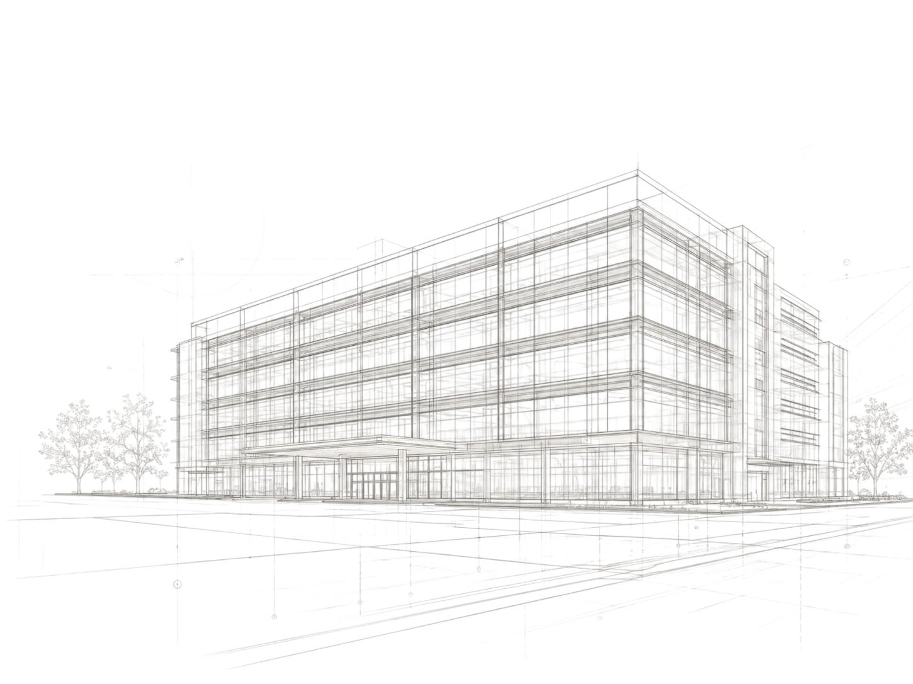

01 / Услуга
Технический заказчик
Организуем управление проектом, координируем участников и отвечаем за движение от проектного решения до ввода объекта.
Собираем процессы, документацию и контроль в одну понятную систему для заказчика.
Какие задачи решает услуга
- Организация работы проектировщиков, подрядчиков и поставщиков.
- Контроль сроков, бюджета, качества и соответствия решениям.
- Подготовка объекта к следующему этапу и вводу в эксплуатацию.
- Единая коммуникация и прозрачная отчётность для заказчика.
02 / Состав работ
Вся система под контролем
01Планирование
Фиксируем цели, этапы, ресурсы и точки контроля.
02Проектирование
Собираем решения и проверяем их готовность к реализации.
03Согласование
Синхронизируем участников и документацию.
04Строительство
Контролируем выполнение работ на объекте.
05Ввод
Готовим объект к передаче и дальнейшей эксплуатации.
03 / Этапы
От задачи к результату
01Подготовка
Определяем исходные данные и критерии результата.
Определяем исходные данные и критерии результата.
02Проектирование
Проверяем решения и планируем реализацию.
Проверяем решения и планируем реализацию.
03Согласование
Фиксируем решения с заказчиком и участниками.
Фиксируем решения с заказчиком и участниками.
04Реализация
Контролируем работы, качество и сроки.
Контролируем работы, качество и сроки.
Результат для заказчика
- Конкретный план действий и единая зона ответственности.
- Прозрачная отчётность по срокам, бюджету и качеству.
- Снижение рисков и повышение готовности объекта.
- Соответствие нормам и требованиям проекта.

04 / Связанные проекты
 Промышленное производство↗
Промышленное производство↗ Общественные объекты↗
Общественные объекты↗ Спортивные сооружения↗
Спортивные сооружения↗ Инженерные системы↗
Инженерные системы↗ Документы проекта↗
Документы проекта↗